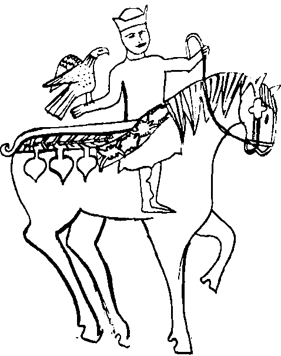

Kalaylı dış yüzeyine On iki İmam’ın isimleri fırdolayı özensizce kazınmış, aşırı kullanımdan ötürü içinin kızılı çıkmış Dağıstan malı küçük bakır sürahinin içindeki tuhaf lacivert cisim dikkatini çekti. Türk girişimciliğinin öncü uçbeylerinden, Uno-mastik İthalat–İhracat’ın sahibi ve genel müdürü Argun Afaki, güneşten korunmaktan çok, olur olmaz yerde tanınmak kaygısıyla taktığı kara gözlüklerini alnına doğru iteleyerek lacivert cismi eline aldı. Sırf lacivert değildi; lacivertin içinde altın rengi küçük benekleri de olan, mekik biçiminde, münasebetsiz, ortası delik bir taştı bu. “Lapis lazuli olsa gerek” diye düşündü. Kabaca yontulmuş iri parke taşlarından yansıyan güneş ışınlarının beyaz ve cehennemi bir sıcağa boğduğu Beyazıt Meydanının ortasında, başındaki dehşetli iri karakul kalpağı ve uzun kara çapanından dolayı pek aykırı duran satıcıya ilk kez baktı.
Sovyet dünyası, sanki sakar birileri ateşte kızdırılmış bir taşa Rus hamamında yanlışlıkla soğuk su dükmüşçesine parçalanmış, uzaya saçılan bu parçaların işte bir bölüğü de güzel şehrimize düşmüştü. Yahut İskender’in ünlü şeddi, arkasındakileri binlerce yıllık baskısına dayanamamış, sonunda darmadağın olmuş, her tarafı alışveriş Mecücleri ile ticaret Yecücleri basmıştı. Veya o ünlü Demir Perde, sabah serinliğinde işe başlayan bir dükkânın kepenklerinin gurultular eşliğinde aceleyle yukarı kalkması gibi kalkmıştı. Henüz kahvaltı yapmadığı ve midesinden de benzer sesler geldiği için Argun bu son imgelemi daha çok beğendi. Bunların hiçbirinden haberi olmayan yaşlı satıcı ise kısık gözleriyle Argun’un yüzüne bakıyordu. Argun kırık dökük Türkmencesini şöyle bir parlatmak niyetiyle sordu:
“Neme (ne) bu? Zıbık mıbık bolmasın sakın?”
Adam, Argun’u şaşırtarak, aksanlı fakat anlaşılır bir İstanbul Türkçesiyle ve umursamaz bir edayla:
“Zıbık dediğin nedir bilmem ama buna Hayal Taşı derler,” dedi.
Argun Afaki, Hayal Taşı diye bir şeyi hiç duymamıştı. Elindeki taşı oldukça estetik bulmasına rağmen, hiç bilmediği bir şeyi satın almak, dahası Adriyatik’ten Çin Seddi’ne kadar uzanan coğrafyada ağabeyliğimizin kanatları altına almak üzere bulunduğumuz dünyanın bir insanına “ne işe yarar bu” diye sormak istemedi. Taşı usulca geri, sürahinin içine bıraktı. Satıcı aynı umursamaz edayla fakat kısık gözlerini biraz açarak:
“İstersen Yada Taşı da var” dedi.
Cevap beklemeden, çapanının içinden bir yerlerden yuvarlak, küremsi, yeşil renkli iri bir taş çıkarttı. Bak, Yada Taşı’nı biliyordu işte. Hani efsanesi okulda okutulan, okutulmak ne kelime kafalarına kazınan, bir kez de üniversite sınavında soru olarak çıkan o ünlü taş ha? Yaşlı adam gözlerini açabildiği kadar açmış, heyecanlanmış, araya kendi dilinden kelimeler de karıştırarak, o bilinen efsaneyi anlatıyordu. “Hava... hava (evet... evet...) o taş.” Bu taş elinde olunca istersen çölde yağmur yağdırırsın, istersen yaz ortasında dolu... Hilekâr Çinlilere kaptırıldığı zaman Türk elleri, taşın gidişinden sonra kelleşen, çoraklaşan ülkelerini nasıl bırakmış, nasıl göç etmiş... İşte bu iki taş tam yetmiş sene boyunca Kızılkum çölündeki bir kör su kuyusunda nasıl ihtimamla korunmuş, Sovyetler’in Tabiatüstü işleri Araştırma ve Geliştirme Bakanlığı’nın burnu iyi koku alan müfettişlerinden nasıl saklanmış; bu uğurda şehit düşen Türkmenlerin sayısı Göktepe’de ölenlerin tam üç katıymış... Argun bunları gülümseyerek dinliyordu. Yirmi adım ötede başka bir satıcıda, kırk adım solda yine başka birinde, sırasıyla bir Kırgız ve galiba bir Stavropol Türkmen’inde de bu yeşilimsi taşları görmüş, kâğıt ağırlığı olarak kullanıldığını öğrenmişti. Hayal Taşı’nı ise ilk kez görüyordu.
Sırtını dönüp gitmeden önce, biraz da adamla son bir yarenlik olsun gibilerinden, “Ersarı” olup olmadığını sordu. Bunu yaparken tam bir Orta Asya Türkmen’i gibi a’yı uzattı, birkaç adet yaptı: “Ersaaarı.” Yok, adam Yomutmuş. Peki canım. Yomutlar da has kardaşımız sayılır. Allaha ısmarladık Yomut kardaş. Haa, adın da Allahberdi mi? Allahberdi Canberdguliev! Güzel, pek güzel, hadi hakikaten Allah versin, hayırlı işler. İstanbul’a hoş gelmişsin. Tam ayrılıyordu ki, Şeytan dürttü. Taşların kaç para olduklarını sormamıştı.
“Kaç para bunlar?”
“Hayal Taşı 8000, Yada Taşı 5000 dolar.”
Dudaklarından gayri ihtiyari, eğer duyulursa oralardaki ağabeylik davamızı epeyce zedeleyecek bir çığlık çıktı: “O...ha!” Allahtan, Allahberdi durumu açıkladı da aynı Yada Taşı’nın niye yan tarafta 6 dolar iken, burada 5000 dolar olduğunu öğreniverdi. Buradakiler gerçekti. Yaa... Kekeleyerek niye Hayal Taşı’nın daha pahalı olduğunu sordu. Yomut’un ona da bir cevabı vardı. Hayal Taşı elinde olunca, o kadar bilginin içinde yağışı kontrol etme bilgisine de zaten sahip oluyordun.
Argun Afaki Bey canevinden vurulmuştu. Nasıldır bilinmez, Yomut’un, Afaki’nin en hassas noktasını bulup attığı ok tam yerine saplanmıştı. Argun, oldum olası, yanına salavatsız varılmaz tekinsiz güzelliklere, erişilmez nesnelere, ulaşılmaz şeylere zaaf derecesinde düşkündü. Otuz küsur yıl önce, daha lise üçte iken Hollywood’un en güzel, en yetenekli, en zengin yıldızına vurulmuş, yemeden içmeden kesilmişti. Üniversitede felsefe okurken de tutturmuş, memleketin en güçlü holdingini –o şebeke diyordu– kendine rakip ilan etmişti. Gerçi arkadaşlarını gülmekten işeten bu yüksek çıtaların hiç faydası olmamış da değildi kendisine. Hollywood’un değil, ama sınıfın en güzel kızı Perran ile önce çıkmış, sonra evlenmiş, felsefeyi unutarak iş yaşamına dalmış, işte bu Uno-mastik İthalat-İhracat’ı yoktan var etmişti. Yine de 8000 dolar, hayatının “artık maalesef tombul yıldızı,” mutlu yuvasının tartışmasız tek hâkimi Perran ile takışmayı gerektirmeyecek kadar küçük bir rakam olmadığı için arzularını içine gömdü, yutkundu ve Yomut’la vedalaşarak meydanın başka taraflarına yöneldi.
1992 yılının bu feci sıcak ve yapışkan 12 Temmuz günü, güneş tam tepeye dikilmek üzereydi. Oyuncağı veya evcil hayvanı elinden alınmış bir çocuğun kırgın haliyle, canı her sıkkın olduğunda yaptığı gibi, sol ayağını sürüye sürüye meydanda irili ufaklı halkalar oluşturmuş insan kümelerine doğru dümen kırdı. En yakınındaki kümeye ulaştı. Ortada, ayakta duran bir kadının etrafında, durmaksızın dönen hareketli bir kümeydi bu. Meraklandı. Hareketsiz duran kadının önünde kapı paspası büyüklüğünde, üst üste yığılmış bir halı demeti vardı. Necip halkımızdan biri bazen duraklayarak bir işaret yapıyor, halı parçasını ona uzatan kadının eline birkaç dolar toka ettikten sonra uzaklaşıyor, duraklayan tavaf hadisesi de kaldığı yerden devam ediyordu. “Dönen kuyruk” fena icat değildi aslında. Satılan eşyayı yeterince görüp inceleyemediğini düşünen bir kez daha, isterse bir kez daha dönüp bakıyordu. Gülümsedi.
Aklından basit bir hesap yaptı. Şu kadıncağızın ta Orta Asya’dan bir seferinde taşıyacağı halı kaç tane olabilirdi ki? Getireceği otuz paspasın her birini on dolara satsa, eline geçen para buralara gelmesine değer miydi? Bavul ticaretinin inceliklerine vâkıf olmayan, Orta Asya'dan İstanbul’a Aeroflot ile gidiş dönüşün ancak bir paspas parası tuttuğunu, İstanbul’a böyle iki üç seyahatle Aşkabat’ta ev alınabildiğini bilmeyen yerli bir tacirin şaşkın ifadesini lakındı. Yüzünü buruşturarak başka bir kümeye gitti. Evet, orada da beyaz bir örtünün üstüne dizilmiş otuz kırk kadar Yada Taşı ve siyah zemin üzerine altın sarısıyla nakışlanmış birkaç tahta kepçe vardı. Ayağını iyice sürüyerek bir çeyrek saat daha dolandı.
Uno-mastik’in yorucu temposundan biraz olsun kurtulmak amacıyla yaptığı Beyazıt gezisi bu kez işe yaramamıştı. “Bari Lütfullah Kapısı tarafına gideyim, belki oralarda bir şey bulurum” diyerek Devlet Kütüphanesinin Mercan’a, Bakırcılar Çarşısına doğru geçit verdiği eyvanımsı yere yöneldi. Biliyordu ki, biraz sidik koksa da o korunaklı, gölgeli geçit kırgın gönlüne hoş gelecek bir serinlikte olacak, sırtını duvara dayayarak dilenen yaşlı kadına biraz para vermek, ruhuna biraz huzur verecek; hah kadın da göründü, her zamanki yerinde. Ama bu kez tam önünde yürüyen iki sarışın, fidan boylu kız ondan önce davrandı. Gülerek kadına para verdiler. Ayaklarında arkası açık, yüksek sivri topuklu kırmızı parlak ayakkabıları, beyaz bellerini açıkta bırakan siyah bluzları ve tuhaf bir pembelikteki dar flanel pantolonları ile ikisi bir örnek giyinmiş kızlar... Karşıdan gelen esmer, saçları jöleli, biri limon sarısı bir ceket, diğeri beyaz, dar, kolsuz bir tişört giymiş olan iki adet, ter kokulu yurdum delikanlısının “Nataşa... yat aşaa” diyerek laf attığı kızlar... Nedense “yat aşaa” sözü onda “Yada Taşı” çağrışımı yaptı. Bu yetmiyormuş gibi Şeytan, bu kez bayağıca güçlü, onu dürttü. Başını olabildiğince geri çevirdi ve pek uzaklarda olmayan Yomut’un yanında, onunla kıran kırana pazarlık yapan birini gördü Argun Afaki Bey.
Yok, bu kadarı gerçekten fazlaydı. Ulaşılmazı erişilmezi, ulaşılmaz erişilmez olarak zihnine nakşetmek başka, yabanın kurduna kuşuna yem etmek başka! Hızlı adımlarla Yomut’un sergisine ulaştı. Ulaştı ve kalakaldı. Uno-mastik’in iki numarası, kendi yetiştirmesi, dahası, büyük halasının lorunu ve akrabası Tankut’la burun buruna geldi. Ramazan topu gibi patlayarak sordu:
“Tankut?”
Abisi ve patronu olan adamın bu patlamalarına şirketten alışkın delikanlı sakince cevap verdi:
“Vay Argun Abi selamlar... Şu İran işi bakır sürahiyi beğendim ama çok istiyor.”
Eh, kim bilir bu sürahi de bilmem kaç bin dolar ederdi. O da adamakıllı “gerçek” duruyordu çünkü. Kızdığı için kendi diline dönen Allahberdi’nin,
“Köpse köp! Yirmi dolardan bir kuruş aşağı olmaz” sözü bu düşüncelerini böldü. Hiç düşünmeksizin elini cebine attı, adama istediği parayı verdi. Sürahiyi aldı. Boştu. Hayal Taşı içinde yoktu. Delikanlının eline tutuşturdu:
“Hadi al git.”
Komutunu alan delikanlı, işine karışıldığı için biraz buruk, sürahiyi edindiği için hafif sevinçli, halıcı kadının kümesine doğru topukladı gitti. Sabırsızlığı, tez canlılığı ve fevriliği ile meşhur Argun Afaki Bey, oğlan daha tam uzaklaşmadan hızla fısıldadı:
“Satmadın değil mi? Alıyorum!”
Yalnız üzerinde o kadar para yoktu. Yomut Bey şu 1000 doları kabul buyursa, geri kalanı da yarın mesai başlar başlamaz şu kartın üzerindeki adrese gelse alsa, acaba olur muydu? Adresi görebilmek için dikkatle karta bakan Allahberdi gözlerini iyice yumup ince bir çizgi yaptı. Galiba “olur” demekti bu. İnsan ta Yomutistanlardan gelir de Bahariye’ye dek gidemez mi?
Yarım saat sonra, bir önceki vapuru yakalamak için koşan ve kıl payı kaçıran, burnundan hâlâ terler damlayan bir Argun, cebinde ne işe yaradığını bile bilmediği, mekik veya bilegitaşı biçiminde delik bir taşla, Kadıköy vapurunun arka tarafına oturmuş, günün muhasebesini yapıyordu. Adamın bakır sürahiye sadece yirmi dolar istemesi dürüst bir satıcı olduğu izlenimini vermiş, şu aldığı Hayal Taşı’na da makul bir fiyat istediği izlenimini yaratmıştı. Şu sokak satıcılarından öğrenecek çok şey vardı.
Yine de Perran’a taşa kaç para verdiğini söylemek zor olacak, “canım üç kuruş beş kuruş” gibisinden bir yalan da delikanlıyı, evet Argun Bey elliye merdiven dayamasına rağmen kendini bir delikanlı olarak görürdü, bozacaktı. Onun içindir ki işte, Aşiyan’daki evine dönecek yerde şirkete gidiyordu. Vapurdan atlar atlamaz bir taksiye bindi. Beş dakika sonra Bahariye’deki işyerine ulaşmıştı bile.